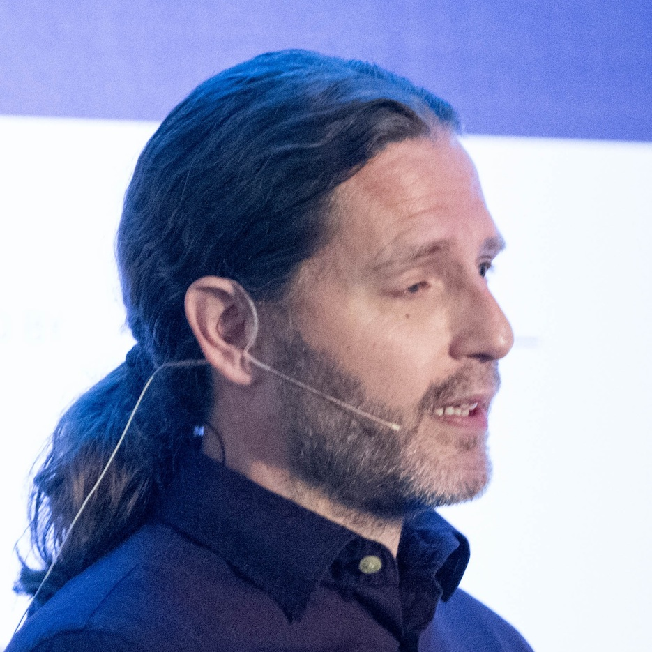
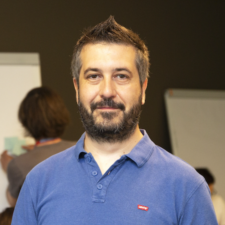

Intentional Organizations
2 days workshop with Trond Hjorteland and João Rosa
  Trond Hjorteland and João RosaWorkshop details
Breaking the bureaucracy: realigning organizational structures for self-managing teams and effective technology fit
Teaser
Do you find it hard to constantly adapt and evolve in a fast-changing and increasingly unpredictable world? Do you struggle with the complexity of software development, the difficulty of evolving your architecture, and the rising cost of change? Did you experience “agile” or technological transformations that didn’t deliver the promised benefits? You are not alone. In this 2-day workshop, we will explore how to realign organizational structures that put the people in the center of the design and allow teams to have agency and autonomy.
Summary
In this 2-day workshop, you will experience, through real-world simulations, how your company can harness the power of the people to create a sensible organizational design that allows teams to self-manage and optimize the use of technology. The workshop is based on open systems thinking, and rather than the typical theory and lectures, it is a 2-days simulation that will take you on a journey of organization design with effective technology integration.
You will learn how to recognize the impact of the environment on a sociotechnical system and create evolutionary paths for the team structures and its technology. The open systems thinking principles and practices will be applied to create a more effective and resilient organization, regardless of whether you are technical or not.
This workshop is suitable for anyone responsible for making any decisions about an organization's design (business, product, and IT).
What is this workshop about
The world is constantly changing, and software plays an ever-increasing role in this change. Companies that leverage technology, such as software, are under pressure to adapt to an unpredictable world. To support a fast flow of change, we can’t just apply the old methods that don’t support the organization's adaptability and treat it as an open and exposed system. We might recognise some consequences of those old methods: accidental complexity keeps growing in your software, people find it incredibly difficult to evolve the system, and the cost of change is rising exponentially. Last but not least, the pressure on people is increasing, and their well-being is at odds with technical progress; burnout and absenteeism are rising, and firms need to retain their talents.
In this workshop, we will explore open sociotechnical systems thinking, which gives equal weight to social and technological aspects and puts people back in the centre of the design. This approach profoundly impacts how we do architecture and organise people to deliver value. We will combine the open sociotechnical systems theory principles with Domain-Driven Design, Wardley Maps, and Team Topologies. By combining those principles and practices, we will explore the environment around the organisation, discover and discuss sensible boundaries for the teams and architecture, and generate options for the evolution of the sociotechnical system.
This workshop is not only based on scientific research, but it is also a 2-day simulation. You will be given a real-world problem, and you will progress through the workshop with support from the facilitators. You will be exposed to the necessary theory as the simulation unfolds, and we will have opportunities to explore your own challenges.
Whether you are an organizational coach, software engineer, or manager, this workshop is for you. Join us and learn how to apply these concepts, principles, and practices to create a more effective, resilient, and adaptive organisation. You will be able to apply it to your context and support your team and organization to have a human-centric design.
Learning goals
- Understanding what an open sociotechnical system is and what the design principles of it are
- Applying Domain-Driven Design, Wardley Maps, and Team Topologies to explore and design open sociotechnical systems that put people in the centre
- Recognise that we operate in an unpredictable environment and how its complexity affects the sociotechnical system (and vice-versa)
- Discover how to create evolutionary paths for the architecture (IT, product and business) and be intentional about its options
- Participating in interactive and practical exercises to apply these concepts and principles in small groups using visual collaboration tools
- Understanding how these principles and practices can be applied to create a more effective and resilient organisation, regardless of whether you are a technical or non-technical professional
What do I need to know?
No prior knowledge of open systems, Domain-Driven Design, Wardley Maps, or Team Topologies is needed. What we need is your curiosity and willingness to learn. The workshop is analog, and based on pen and paper only. Good old methods.
Audience
This 2-day workshop is designed for anyone responsible for any decision about the architecture (business, product and IT) in an organisation. Here is a list of potential roles:
- Agile coach
- Engineering managers
- Product managers
- Senior+ software engineering
- UX leads
- C(x)O
- Director of department
- HR manager
- Operations lead
- Test manager
As you can see, a diverse crowd of roles. Anyone interested in creating an environment where we, humans, can thrive and do our best work!
About Trond HJORTELAND
Senior IT Consultant and sociotechnical practitioner.
Trond is an IT architect and open sociotechnical systems practitioner from the consulting firm Scienta.no with many years’ experience working with large, complex, and business critical systems in industries like telecom, media, TV, and public sector.
His main interests are service-orientation, domain-driven design, event driven architectures, and open sociotechnical systems. His mantra: Great solutions emerge from collaborative sense-making and design.
Trond tweets at @trondhjort and blogs at www.linkedin.com/today/author/trondhjort
About João ROSA
Independent Consultant
João is an independent consultant focused on supporting organisations in creating purposeful systems. As part of his consultancy practice, he helps organisations bridge their strategy to execution. He is passionate about the evolution of sociotechnical systems.
He is a Team Topologies Valued Practitioner. He is also one of the authors of the book Software Architecture Metrics, the curator of the book Visual Collaboration Tools and the host of the Software Crafts Podcast.
You can find him travelling with his daughter and wife or lying on the beach reading a book when he is not on his duties. João is an amateur cook in his remaining time.